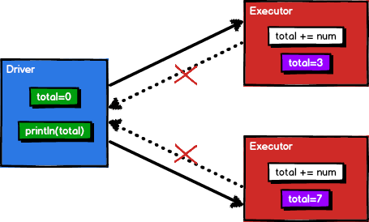

累加器
Spark 中累加器用来解决一些特殊的需求。假设有一个需求，对 RDD 中的数据进行累加求和并返回，当然使用 reduce 可以很好地实现，但我们想尝试一下定义一个新的变量，依次遍历 RDD 对每个元素进行累加最后返回这个变量的值。
1
2
3
4
5
6
7
| val spark: SparkSession = SparkSession.builder().master("local[*]").getOrCreate()
val sc: SparkContext = spark.sparkContext
val rdd: RDD[Int] = sc.makeRDD(List(1, 2, 3, 4))
var total: Int = 0
rdd.foreach(total += _)
println(total)
|
没错结果为 0 ，其实原因很简单，不管是 foreach 还是 map ，它的计算都是在 executor 端执行的，而变量 total 在 driver 端，在 foreach 里面累加的只是 executor 端 total 变量的副本，而这个副本并没有再传回给 driver 端，所以 driver 端的 total 变量还是 0 ，上方代码的实现如下图所示。

累加器用来把 executor 端变量信息聚合到 driver 端。在 driver 程序中定义的变量，在 executor 端的每个 Task 都会得到这个变量的一份新的副本，每个 task 更新这些副本的值后，传回 driver 端进行 merge。他是一个分布式只写共享变量，每个 executor 之间是不可见的，只有 driver 端可以对其读操作。例如同样是上方的例子，将它注册为累加器即可。
1
2
3
4
5
6
7
8
| val rdd: RDD[Int] = sc.makeRDD(List(1, 2, 3, 4))
val total: LongAccumulator = sc.longAccumulator("total")
rdd.foreach({
num => {
total.add(num)
}
})
println(total.value)
|
Spark 中内置了 longAccumulator、doubleAccumulator 和 collectionAccumulator 几种累加器，但是生产中可能有其他的需求需要自定义累加器，查看源码得知需要混入 AccumulatorV2 特质后注册即可使用。
1
2
3
4
5
6
7
8
9
|
def longAccumulator(name: String): LongAccumulator = {
val acc = new LongAccumulator
register(acc, name)
acc
}
class LongAccumulator extends AccumulatorV2[jl.Long, jl.Long]
|
下面实现 WordCount 累加器，从过程上来讲直接省略了 Shuffle 阶段， executor 计算完之后再传给 driver 端 merge 。
1
2
3
4
5
6
7
8
9
10
11
12
13
14
15
16
17
18
19
20
21
22
23
24
25
26
27
28
29
30
31
32
33
34
35
36
37
38
39
40
41
42
43
44
45
| val rdd: RDD[String] = sc.makeRDD(List("Hello World", "Hello Scala", "Scala Java"))
val wcAcc = new WordCountAccumulator
sc.register(wcAcc, "wcAcc")
rdd.flatMap(_.split(" ")).foreach(
word => {
wcAcc.add(word)
}
)
println(wcAcc.value)
class WordCountAccumulator extends AccumulatorV2[String, mutable.Map[String, Long]] {
private val map: mutable.Map[String, Long] = mutable.Map()
override def isZero: Boolean = map.isEmpty
override def copy(): AccumulatorV2[String, mutable.Map[String, Long]] = new WordCountAccumulator
override def reset(): Unit = map.clear()
override def add(word: String): Unit = {
map(word) = map.getOrElse(word, 0L) + 1L
}
override def merge(other: AccumulatorV2[String, mutable.Map[String, Long]]): Unit = {
val map1: mutable.Map[String, Long] = map
val map2: mutable.Map[String, Long] = other.value
map2.foreach{
kv => {
map1(kv._1) = map1.getOrElse(kv._1, 0L) + kv._2
}
}
}
override def value: mutable.Map[String, Long] = map
|
累加器在使用过程中有两个需要注意的点，分别是少加和多加。少加比较容易理解，在没有行动算子调用之前它是不会执行的，直接使用 foreach 或者使用 map 后再使用 collect 就可以避免这种情况；再就是多加，每调用一次行动算子累加器就会执行一次，但是在程序结束前它不会自动清空，所以需要手动使用 wcAcc.reset() 方法重置累加器，或者重新注册新的累加器。
广播变量
广播变量是一个分布式共享只读变量，用来高效分发较大的对象。向所有 executor 发送一个较大的只读值，以供一个或多个 Spark 操作使用。比如，如果你的应用需要向所有 executor 发送一个较大的只读查询表， 广播变量用起来就很顺手。
在多个并行操作中使用同一个变量，但是 Spark 会为每个 task 分别发送，这样就会造成资源和空间的浪费，将变量广播到所有的 executor ，那么每个 executor 下的所有 task 都可以访问到这个变量而不用在 task 内部存储变量。使用 broadcast 声明并使用 value 调用即可。
1
2
3
4
5
6
7
8
9
10
11
12
| val rdd: RDD[(String, Int)] = sc.makeRDD(List( ("a",1), ("b", 2), ("c", 3), ("d", 4) ))
val list = List( ("a",4), ("b", 5), ("c", 6), ("d", 7) )
val broadcast: Broadcast[List[(String, Int)]] = sc.broadcast(list)
rdd.map {
case (key, num) => {
var num2 = 0
for ((k, v) <- broadcast.value) {
if (k == key) num2 = v
}
(key, (num, num2))
}
}.foreach(println)
|
需要注意的是广播变量不可以广播 RDD ，因为 RDD 不存储数据，可以将 RDD 的结果广播出去。